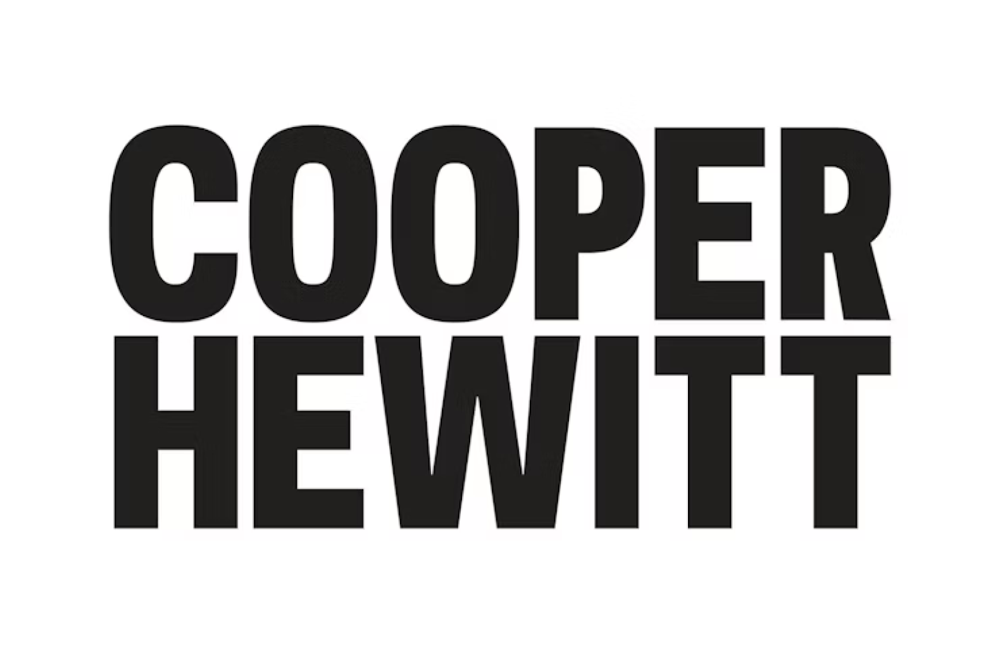
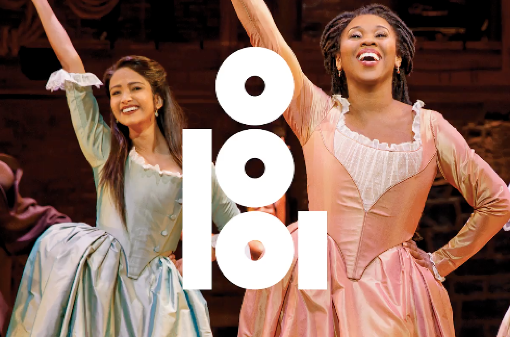

This page presents a curated selection of works associated with Eddie
Opara, focusing on branding, typography, editorial thinking, and visual
systems.

Brand Identity
Cooper Hewitt
New brand identity for the museum developed in 2014 by Opara and Michael Gericke to celebrate its 40th anniversary at the historic Andrew Carnegie Mansion.
Developed an icon system to be used for an interactive “Pen” the museum implemented for visitors.
Draws from the visual language of the wordmark.

Nebraska-based arts organization
Omaha Performing Arts
2019 brand identity for the Nebraska-based arts organization and center.
The mark plays off a local nickname for the center, OPA,
pulling the first letter from each word in Omaha Performing Arts
That said, the mark isn’t limited to this structure.
All three “letters” split apart, and the “O” is an especially remixed asset
Typography
Project Three
This card can focus on type, layout, and the relationship between
graphic form and meaning.
Add a note here about what makes the project visually distinctive
or conceptually strong.
Visual Systems
Project Four
This section can describe a project that demonstrates modularity,
consistency, or system-based communication.
Add detail about the audience, communication goal, or visual
organization used in the project.